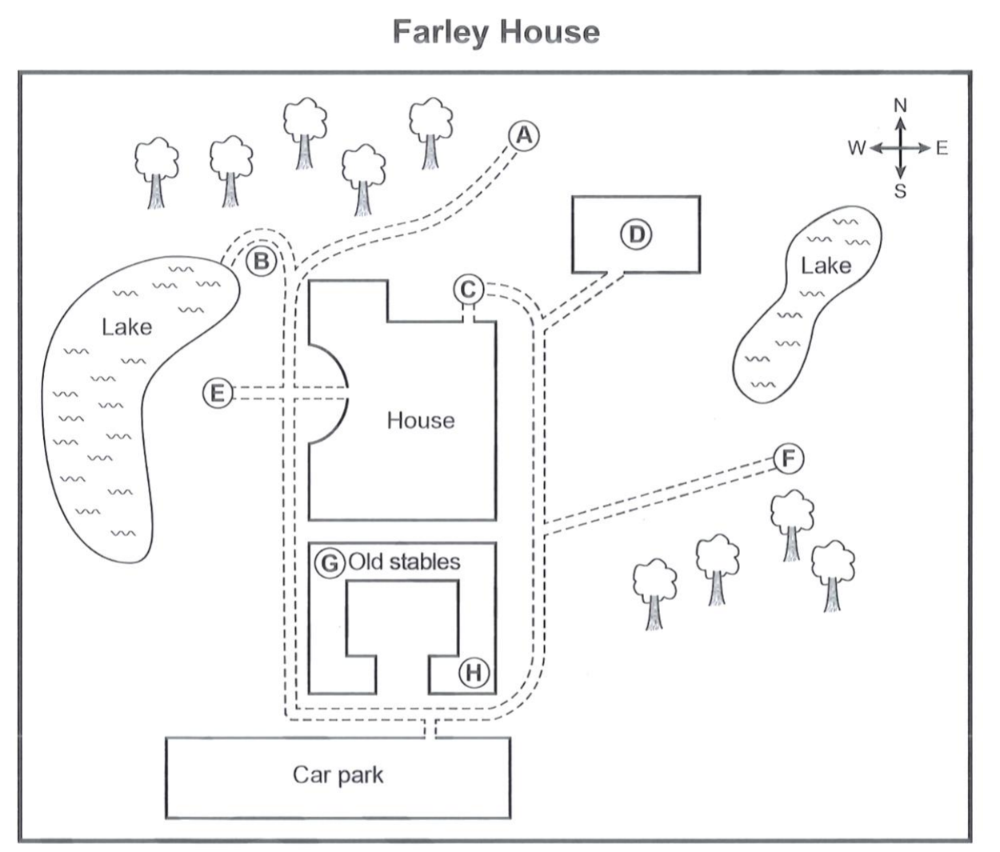

Phiếu trả lời Listening
Bấm số câu để nhảy tới câu đó. Bài làm được tự lưu trên máy này. Thời gian thi thật: khoảng 30 phút.
PART 1 Questions 1–10
Complete the notes below.
Write ONE WORD AND/OR A NUMBER for each answer.
Hinchingbrooke Country Park The park Area: hectares Habitats: wetland, grassland and woodland Wetland: lakes, ponds and a Wildlife includes birds, insects and animals Subjects studied in educational visits include Science: Children look at about plants, etc. Geography: includes learning to use a and compass History: changes in land use Leisure and tourism: mostly concentrates on the park’s Music: Children make with natural materials, and experiment with rhythm and speed. Benefits of outdoor educational visits They give children a feeling of that they may not have elsewhere. Children learn new and gain self-confidence. Practical issues Cost per child: £ Adults, such as , free |
📜 Lời thoại Part 1
SALLY: Good morning. Hinchingbrooke Country Park, Sally speaking. I’m one of the rangers.
JOHN: Oh hello. My name’s John Chapman, and I’m a teaching assistant at a local primary school. I’ve been asked to arrange a visit to the park for two of our classes.
SALLY: OK. What would you like to know?
JOHN: Well, I’m new to this area, so perhaps you could tell me something about the park first, please.
SALLY: Of course. Altogether the park covers 170 acres, that’s 69 hectares. There are three main types of habitat: wetland, grassland and woodland. The woods are well established and varied, with an oak plantation, and other areas of mixed species.
JOHN: Right.
SALLY: The wetland is quite varied, too. The original farmland was dug up around 40 years ago to extract gravel. Once this work was completed, the gravel pits filled with water, forming the two large lakes. There are also several smaller ones, ponds and a stream that flows through the park.
JOHN: OK, so I suppose with these different habitats there’s quite a variety of wildlife.
SALLY: There certainly is – a lot of different species of birds and insects, and also animals like deer and rabbits.
JOHN: And I understand you organise educational visits for school parties.
SALLY: That’s right. We can organise a wide range of activities and adapt them to suit all ages.
JOHN: Can you give me some examples of the activities?
SALLY: Well, one focus is on science, where we help children to discover and study plants, trees and insects. They also collect and analyse data about the things they see.
JOHN: Uhuh.
SALLY: Another focus is on geography. The park is a great environment to learn and practise reading a map and using a compass to navigate around the park.
JOHN: Do you do anything connected with history?
SALLY: Yes, we do. For instance, the children can explore how the use of the land has changed over time. Then there’s leisure and tourism.
JOHN: That focuses on your visitors, I would imagine.
SALLY: Yes, mostly. The children find out about them, their requirements, the problems they may cause and how we manage these. And another subject we cover is music: here the children experiment with natural materials to create sounds and explore rhythm and tempo.
JOHN: That must be fun!
SALLY: Most children really enjoy it.
SALLY: And of course, all the activities are educational, too. Learning outside the classroom encourages children to be creative, and to explore and discover for themselves.
JOHN: I would imagine they get a sense of freedom that might not be a normal part of their lives.
SALLY: That’s right. And very often the children discover that they can do things they didn’t know they could do, and they develop new skills. This gives them greater self-confidence.
JOHN: It sounds great. So, what about the practical side of it? How much does it cost for a full-day visit? We would expect to bring between 30 and 40 children.
SALLY: If there are over 30, it costs £4.95 for each child who attends on the day. We invoice you afterwards, so you don’t pay for children who can’t come because of sickness, for example. There’s no charge for leaders and other adults – as many as you want to bring.
JOHN: That sounds very fair. Well, thanks for all the information. I’ll need to discuss it with my colleagues, and I hope to get back to you soon to make a booking.
SALLY: We’ll look forward to hearing from you. Goodbye.
JOHN: Goodbye, and thank you.
PART 2 Questions 11–20
Questions 11–15
Choose the correct letter, A, B or C.
Stanthorpe Twinning Association
11 During the visit to Malatte, in France, members especially enjoyed
12 What will happen in Stanthorpe to mark the 25th anniversary of the Twinning Association?
13 Which event raised most funds this year?
14 For the first evening with the French visitors host families are advised to
15 On Saturday evening there will be the chance to
Questions 16–20
Label the map below.
Write the correct letter, A–H, next to Questions 16–20.

16 Farm shop
17 Disabled entry
18 Adventure playground
19 Kitchen gardens
20 The Temple of the Four Winds
📜 Lời thoại Part 2
It’s great to see so many members of the Twinning Association here tonight. Since the twinning link between our two towns, Stanthorpe here in England and Malatte in France, was established, the relationship between the towns has gone from strength to strength.
Last month, 25 members of the association from Stanthorpe spent a weekend in Malatte. Our hosts had arranged a great programme. We learned how cheese is produced in the region and had the chance to taste the products. The theme park trip had to be cancelled, but we all had a great time on the final boat trip down the river – that was the real highlight.
This is a special year for the Association because it’s 25 years since we were founded. In Malatte, they’re planning to mark this by building a footbridge in the municipal park. We’ve been discussing what to do here and we’ve decided to plant a poplar tree in the museum gardens. We considered buying a garden seat to put there, but the authorities weren’t happy with that idea.
In terms of fundraising to support our activities, we’ve done very well. Our pancake evening was well attended and made record profits. And everyone enjoyed the demonstration of French cookery, which was nearly as successful. Numbers for our film show were limited because of the venue so we’re looking for somewhere bigger next year.
We’re looking forward to welcoming our French visitors here next week, and I know that many of you here will be hosting individuals or families. The coach from France will arrive at 5 pm on Friday. Don’t try to do too much that first evening as they’ll be tired, so have dinner in the house or garden rather than eating out. The weather looks as if it’ll be OK so you might like to plan a barbecue. Then the next morning’s market day in town, and that’s always a good place to stroll round.
On Saturday evening, we’ll all meet up at the football club, where once again we’ll have Toby Sharp and his band performing English and Scottish country songs. Toby will already be well known to many of you as last year he organised our special quiz night and presented the prizes.
Now on Sunday, we’ll be taking our visitors to Farley House. You may not all be familiar with it, so here’s a map to help you. You can see the car park at the bottom of the map. There’s an excellent farm shop in the grounds where our visitors can buy local produce – it’s in the old stables, which is the first building you come to. They’re built round a courtyard, and the shop’s in the far corner on the left.
There’s also a small café on the right as you go in.
I know that one or two of our visitors may not be all that mobile. The main entrance to the house has a lot of steps so you might want to use the disabled entry. This is on the far side of the house from the car park.
Children will probably be most interested in the adventure playground. That’s at the northern end of the larger lake, in a bend on the path that leads to the lake. There’s lots for children to do there.
There are a number of lovely gardens near the house. The kitchen gardens are rectangular and surrounded by a wall. They’re to the north-east of the house, quite near the smaller lake. They’re still in use and have a great collection of fruit and vegetables.
The Temple of the Four Winds is a bit more of a walk – but it’s worth it. Take the path from the car park and go past the western sides of the stables and the house. Then when the path forks, take the right-hand path. Go up there with the woods on your left and the temple is right at the end. There are great views over the whole area.
OK, so that’s …
PART 3 Questions 21–30
Questions 21 and 22
Choose TWO letters, A–E.
21–22 Which TWO things did Colin find most satisfying about his bread reuse project?
Questions 23 and 24
Choose TWO letters, A–E.
23–24 Which TWO ways do the students agree that touch-sensitive sensors for food labels could be developed in future?
Questions 25–30
What is the students’ opinion about each of the following food trends?
Choose SIX answers from the box and write the correct letter, A–H, next to Questions 25–30.
Opinions A This is only relevant to young people. B This may have disappointing results. C This already seems to be widespread. D Retailers should do more to encourage this. E More financial support is needed for this. F Most people know little about this. G There should be stricter regulations about this. H This could be dangerous. |
Food trends
25 Use of local products
26 Reduction in unnecessary packaging
27 Gluten-free and lactose-free food
28 Use of branded products related to celebrity chefs
29 Development of ‘ghost kitchens’ for takeaway food
30 Use of mushrooms for common health concerns
📜 Lời thoại Part 3
COLIN: I haven’t seen you for a bit, Marie.
MARIE: No. I’ve been busy with my project.
COLIN: You’re making a vegan alternative to eggs, aren’t you? Something that doesn’t use animal products?
MARIE: Yes. I’m using chickpeas. I had two main aims when I first started looking for an alternative to eggs, but actually I’ve found chickpeas have got more advantages.
COLIN: Right.
MARIE: But how about your project on reusing waste food – you were looking at bread, weren’t you?
COLIN: Yes. It’s been hard work, but I’ve enjoyed it. The basic process was quite straightforward – breaking the stale bread down to a paste then reforming it.
MARIE: But you were using 3-D printing, weren’t you, to make the paste into biscuits?
COLIN: Yeah, I’d used that before, but in this project, I had time to play around with different patterns for the biscuits and finding how I could add fruit and vegetables to make them a more appetising colour, and I was really pleased with what I managed to produce.
MARIE: It must’ve been a great feeling to make something appetising out of bits of old bread that would’ve been thrown away otherwise.
COLIN: It was. And I’m hoping that some of the restaurants in town will be interested in the biscuits. I’m going to send them some samples.
MARIE: I came across something on the internet yesterday that might interest you. It was a company that’s developed touch-sensitive sensors for food labels.
COLIN: Mmm?
MARIE: It’s a special sort of label on the food package. When the label’s smooth, the food is fresh and then when you can feel bumps on the label, that means the food’s gone bad. It started off as a project to help visually impaired people know whether food was fit to eat or not.
COLIN: Interesting. So just solid food?
MARIE: No, things like milk and juice as well. But actually, I thought it might be really good for drug storage in hospitals and pharmacies.
COLIN: Right. And coming back to food, maybe it’d be possible to use it for other things besides freshness. Like how many kilograms a joint of meat is, for example.
MARIE: Yes, there’s all sorts of possibilities.
COLIN: I was reading an article about food trends predicting how eating habits might change in the next few years.
MARIE: Oh – things like more focus on local products? That seems so obvious, but the shops are still full of imported foods.
COLIN: Yes, they need to be more proactive to address that.
MARIE: And somehow motivate consumers to change, yes.
COLIN: One thing everyone’s aware of is the need for a reduction in unnecessary packaging – but just about everything you buy in supermarkets is still covered in plastic. The government needs to do something about it.
MARIE: Absolutely. It’s got to change.
COLIN: Do you think there’ll be more interest in gluten- and lactose-free food?
MARIE: For people with allergies or food intolerances? I don’t know. Lots of people I know have been buying that type of food for years now.
COLIN: Yes, even if they haven’t been diagnosed with an allergy.
MARIE: That’s right. One thing I’ve noticed is the number of branded products related to celebrity chefs – people watch them cooking on TV and then buy things like spice mixes or frozen foods with the chef’s name on … I bought something like that once, but I won’t again.
COLIN: Yeah – I bought a ready-made spice mix for chicken which was supposed to be used by a chef I’d seen on television, and it didn’t actually taste of anything.
MARIE: Mm. Did the article mention ‘ghost kitchens’ used to produce takeaway food?
COLIN: No. What are they?
MARIE: Well, they might have the name of a restaurant, but actually they’re a cooking facility just for delivery meals – the public don’t ever go there. But people aren’t aware of that – it’s all kept very quiet.
COLIN: So people don’t realise the food’s not actually from the restaurant?
MARIE: Right.
COLIN: Did you know more and more people are using all sorts of different mushrooms now, to treat different health concerns? Things like heart problems?
MARIE: Hmm. They might be taking a big risk there.
COLIN: Yes, it’s hard to know which varieties are safe to eat. Anyway maybe now …
PART 4 Questions 31–40
Complete the notes below.
Write ONE WORD ONLY for each answer.
Céide Fields
Discovery
Neolithic farmers
Reasons for the decline in farming
|
📜 Lời thoại Part 4
For my presentation today, I’m going to talk about the Céide Fields in the northwest of Ireland, one of the largest Neolithic sites in the world. I recently visited this site and observed the work that is currently being done by a team of archaeologists there.
The site was first discovered in the 1930s by a local teacher, Patrick Caulfield. He noticed that when local people were digging in the bog, they were constantly hitting against what seemed to be rows of stones. He realised that these must be walls and that they must be thousands of years old for them to predate the bog which subsequently grew over them.
He wrote to the National Museum in Dublin to ask them to investigate, but no one took him seriously. It wasn’t until 40 years later, when Patrick Caulfield’s son Seamus, who had become an archaeologist by then, began to explore further. He inserted iron probes into the bog to map the formation of the stones, a traditional method which local people had always used for finding fuel buried in the bog for thousands of years. Carbon dating later proved that the site was over 5,000 years old and was the largest Neolithic site in Ireland.
Thanks to the bog which covers the area, the remains of the settlement at Céide Fields, which is over 5,000 years old, are extremely well-preserved. A bog is 90 percent water; its soil is so saturated that when the grasses and heathers that grow on its surface die, they don’t fully decay but accumulate in layers. Objects remain so well preserved in these conditions because of the acidity of the peat and the deficiency of oxygen. At least 175 days of rain a year are required for this to happen; this part of Ireland gets an average of 225 days.
The Neolithic farmers at Céide would have enjoyed several centuries of relative peace and stability. Neolithic farmers generally lived in larger communities than their predecessors, with a number of houses built around a community building. As they lived in permanent settlements, Neolithic farmers were able to build bigger houses. These weren’t round as people often assume, but rectangular with a small hole in the roof that allowed smoke to escape. This is one of many innovations and indicates that the Neolithic farmers were the first people to cook indoors.
Another new technology that Neolithic settlers brought to Ireland was pottery. Fragments of Neolithic pots have been found in Céide and elsewhere in Ireland. The pots were used for many things; as well as for storing food, pots were filled with a small amount of fat and when this was set alight, they served as lamps.
It’s thought that the Céide Fields were mainly used as paddocks for animals to graze in. Evidence from the Céide Fields suggests that each plot of land was of a suitable size to sustain an extended family. They may have used a system of rotational grazing in order to prevent over-grazing and to allow for plant recovery and regrowth. This must have been a year-round activity as no structures have been found which would have been used to shelter animals in the winter.
However, archaeologists believe that this way of life at Céide ceased abruptly. Why was this? Well, several factors may have contributed to the changing circumstances. The soil would have become less productive and led to the abandonment of farming. The crop rotation system was partly responsible for this as it would have been very intensive and was not sustainable.
But there were also climatic pressures too. The farmers at Céide would have enjoyed a relatively dry period, but this began to change and the conditions became wetter as there was a lot more rain. It was these conditions that encouraged the bog to form over the area which survives today.
So now I’d like to show you some …
Phiếu trả lời Reading
Bấm số câu để nhảy tới câu đó. Bài làm được tự lưu trên máy này. Thời gian thi thật: 60 phút.
READING PASSAGE 1 Questions 1–13
You should spend about 20 minutes on Questions 1–13, which are based on Reading Passage 1 below.
How tennis rackets have changed
In 2016, the British professional tennis player Andy Murray was ranked as the world’s number one. It was an incredible achievement by any standard – made even more remarkable by the fact that he did this during a period considered to be one of the strongest in the sport’s history, competing against the likes of Rafael Nadal, Roger Federer and Novak Djokovic, to name just a few. Yet five years previously, he had been regarded as a talented outsider who entered but never won the major tournaments.
Of the changes that account for this transformation, one was visible and widely publicised: in 2011, Murray invited former number one player Ivan Lendl onto his coaching team – a valuable addition that had a visible impact on the player’s playing style. Another change was so subtle as to pass more or less unnoticed. Like many players, Murray has long preferred a racket that consists of two types of string: one for the mains (verticals) and another for the crosses (horizontals). While he continued to use natural string in the crosses, in 2012 he switched to a synthetic string for the mains. A small change, perhaps, but its importance should not be underestimated.
The modification that Murray made is just one of a number of options available to players looking to tweak their rackets in order to improve their games. ‘Touring professionals have their rackets customised to their specific needs,’ says Colin Triplow, a UK-based professional racket stringer. ‘It’s a highly important part of performance maximisation.’ Consequently, the specific rackets used by the world’s elite are not actually readily available to the public; rather, each racket is individually made to suit the player who uses it. Take the US professional tennis players Mike and Bob Bryan, for example: ‘We’re very particular with our racket specifications,’ they say. ‘All our rackets are sent from our manufacturer to Tampa, Florida, where our frames go through a . . . thorough customisation process.’ They explain how they have adjusted not only racket length, but even experimented with different kinds of paint. The rackets they use now weigh more than the average model and also have a denser string pattern (i.e. more crosses and mains).
The primary reason for these modifications is simple: as the line between winning and losing becomes thinner and thinner, even these slight changes become more and more important. As a result, players and their teams are becoming increasingly creative with the modifications to their rackets as they look to maximise their competitive advantage.
Racket modifications mainly date back to the 1970s, when the amateur German tennis player Werner Fischer started playing with the so-called spaghetti-strung racket. It created a string bed that generated so much topspin that it was quickly banned by the International Tennis Federation. However, within a decade or two, racket modification became a regularity. Today it is, in many ways, an aspect of the game that is equal in significance to nutrition or training.
Modifications can be divided into two categories: those to the string bed and those to the racket frame. The former is far more common than the latter: the choice of the strings and the tension with which they are installed is something that nearly all professional players experiment with. They will continually change it depending on various factors including the court surface, climatic conditions, and game styles. Some will even change it depending on how they feel at the time.
At one time, all tennis rackets were strung with natural gut made from the outer layer of sheep or cow intestines. This all changed in the early 1990s with the development of synthetic strings that were cheaper and more durable. They are made from three materials: nylon (relatively durable and affordable), Kevlar (too stiff to be used alone) or co-polyester (polyester combined with additives that enhance its performance). Even so, many professional players continue to use a ‘hybrid set-up’, where a combination of both synthetic and natural strings are used.
Of the synthetics, co-polyester is by far the most widely used. It’s a perfect fit for the style of tennis now played, where players tend to battle it out from the back of the court rather than coming to the net. Studies indicate that the average spin from a co-polyester string is 25% greater than that from natural string or other synthetics. In a sense, the development of co-polyester strings has revolutionised the game.
However, many players go beyond these basic adjustments to the strings and make changes to the racket frame itself. For example, much of the serving power of US professional player Pete Sampras was attributed to the addition of four to five lead weights onto his rackets, and today many professionals have the weight adjusted during the manufacturing process.
Other changes to the frame involve the handle. Players have individual preferences for the shape of the handle and some will have the handle of one racket moulded onto the frame of a different racket. Other players make different changes. The professional Portuguese player Gonçalo Oliveira replaced the original grips of his rackets with something thinner because they had previously felt uncomfortable to hold.
Racket customisation and modification have pushed the standards of the game to greater levels that few could have anticipated in the days of natural strings and heavy, wooden frames, and it’s exciting to see what further developments there will be in the future.
Questions 1–7
Do the following statements agree with the information given in Reading Passage 1?
In boxes 1–7 on your answer sheet, write
TRUE if the statement agrees with the information
FALSE if the statement contradicts the information
NOT GIVEN if there is no information on this
1 People had expected Andy Murray to become the world’s top tennis player for at least five years before 2016.
2 The change that Andy Murray made to his rackets attracted a lot of attention.
3 Most of the world’s top players take a professional racket stringer on tour with them.
4 Mike and Bob Bryan use rackets that are light in comparison to the majority of rackets.
5 Werner Fischer played with a spaghetti-strung racket that he designed himself.
6 The weather can affect how professional players adjust the strings on their rackets.
7 It was believed that the change Pete Sampras made to his rackets contributed to his strong serve.
Questions 8–13
Complete the notes below.
Choose ONE WORD ONLY from the passage for each answer.
Write your answers in boxes 8–13 on your answer sheet.
The tennis racket and how it has changed
|
|---|
READING PASSAGE 2 Questions 14–26
You should spend about 20 minutes on Questions 14–26, which are based on Reading Passage 2 below.
The pirates of the ancient Mediterranean
In the first and second millennia BCE, pirates sailed around the Mediterranean, attacking ships and avoiding pursuers
A When one mentions pirates, an image springs to most people’s minds of a crew of misfits, daredevils and adventurers in command of a tall sailing ship in the Caribbean Sea. Yet from the first to the third millennium BCE, thousands of years before these swashbucklers began spreading fear across the Caribbean, pirates prowled the Mediterranean, raiding merchant ships and threatening vital trade routes. However, despite all efforts and the might of various ancient states, piracy could not be stopped. The situation remained unchanged for thousands of years. Only when the pirates directly threatened the interests of ancient Rome did the Roman Republic organise a massive fleet to eliminate piracy. Under the command of the Roman general Pompey, Rome eradicated piracy, transforming the Mediterranean into ‘Mare Nostrum’ (Our Sea).
B Although piracy in the Mediterranean is first recorded in ancient Egypt during the reign of Pharaoh Amenhotep III (c 1390–1353 BCE), it is reasonable to assume it predated this powerful civilisation. This is partly due to the great importance the Mediterranean held at this time, and partly due to its geography. While the Mediterranean region is predominantly fertile, some parts are rugged and hilly, even mountainous. In the ancient times, the inhabitants of these areas relied heavily on marine resources, including fish and salt. Most had their own boats, possessed good seafaring skills, and unsurpassed knowledge of the local coastline and sailing routes. Thus, it is not surprising that during hardships, these men turned to piracy. Geography itself further benefited the pirates, with the numerous coves along the coast providing places for them to hide their boats and strike undetected. Before the invention of ocean-going caravels* in the 15th century, ships could not easily cross long distances over open water. Thus, in the ancient world most were restricted to a few well-known navigable routes that followed the coastline. Caught in a trap, a slow merchant ship laden with goods had no other option but to surrender. In addition, knowledge of the local area helped the pirates to avoid retaliation once a state fleet arrived.
C One should also add that it was not unknown in the first and second millennia BCE for governments to resort to pirates’ services, especially during wartime, employing their skills and numbers against their opponents. A pirate fleet would serve in the first wave of attack, preparing the way for the navy. Some of the regions were known for providing safe harbours to pirates, who, in return, boosted the local economy.
D The first known record of a named group of Mediterranean pirates, made during the rule of ancient Egyptian Pharaoh Akhenaten (c 1353–1336 BCE), was in the Amarna Letters. These were extracts of diplomatic correspondence between the pharaoh and his allies, and covered many pressing issues, including piracy. It seems the pharaoh was troubled by two distinct pirate groups, the Lukka and the Sherden. Despite the Egyptian fleet’s best efforts, the pirates continued to cause substantial disruption to regional commerce. In the letters, the king of Alashiya (modern Cyprus) rejected Akhenaten’s claims of a connection with the Lukka (based in modern-day Turkey). The king assured Akhenaten he was prepared to punish any of his subjects involved in piracy.
E The ancient Greek world’s experience of piracy was different from that of Egyptian rulers. While Egypt’s power was land-based, the ancient Greeks relied on the Mediterranean in almost all aspects of life, from trade to warfare. Interestingly, in his works the Iliad and the Odyssey, the ancient Greek writer Homer not only condones, but praises the lifestyle and actions of pirates. The opinion remained unchanged in the following centuries. The ancient Greek historian Thucydides, for instance, glorified pirates’ daring attacks on ships or even cities. For Greeks, piracy was a part of everyday life. Even high-ranking members of the state were not beyond engaging in such activities. According to the Greek orator Demosthenes, in 355 BCE, Athenian ambassadors made a detour from their official travel to capture a ship sailing from Egypt, taking the wealth found onboard for themselves!
The Greeks’ liberal approach towards piracy does not mean they always tolerated it, but attempts to curtail piracy were hampered by the large number of pirates operating in the Mediterranean.
F The rising power of ancient Rome required the Roman Republic to deal with piracy in the Mediterranean. While piracy was a serious issue for the Republic, Rome profited greatly from its existence. Pirate raids provided a steady source of slaves, essential for Rome’s agriculture and mining industries. But this arrangement could work only while the pirates left Roman interests alone. Pirate attacks on grain ships, which were essential to Roman citizens, led to angry voices in the Senate, demanding punishment of the culprits. Rome, however, did nothing, further encouraging piracy. By the 1st century BCE, emboldened pirates kidnapped prominent Roman dignitaries, asking for a large ransom to be paid. Their most famous hostage was none other than Julius Caesar, captured in 75 BCE.
G By now, Rome was well aware that pirates had outlived their usefulness. The time had come for concerted action. In 67 BCE, a new law granted Pompey vast funds to combat the Mediterranean menace. Taking personal command, Pompey divided the entire Mediterranean into 13 districts, assigning a fleet and commander to each. After cleansing one district of pirates, the fleet would join another in the next district. The process continued until the entire Mediterranean was free of pirates. Although thousands of pirates died at the hands of Pompey’s troops, as a long-term solution to the problem, many more were offered land in fertile areas located far from the sea. Instead of a maritime menace, Rome got productive farmers that further boosted its economy.
* caravel: a small, highly manoeuvrable sailing ship developed by the Portuguese
Questions 14–19
Reading Passage 2 has seven paragraphs, A–G.
Which paragraph contains the following information?
Write the correct letter, A–G, in boxes 14–19 on your answer sheet.
NB You may use any letter more than once.
14 a reference to a denial of involvement in piracy
15 details of how a campaign to eradicate piracy was carried out
16 a mention of the circumstances in which states in the ancient world would make use of pirates
17 a reference to how people today commonly view pirates
18 an explanation of how some people were encouraged not to return to piracy
19 a mention of the need for many sailing vessels to stay relatively close to land
Questions 20 and 21
Choose TWO letters, A–E.
Write the correct letters in boxes 20 and 21 on your answer sheet.
20–21 Which TWO of the following statements does the writer make about inhabitants of the Mediterranean region in the ancient world?
Questions 22 and 23
Choose TWO letters, A–E.
Write the correct letters in boxes 22 and 23 on your answer sheet.
22–23 Which TWO of the following statements does the writer make about piracy and ancient Greece?
Questions 24–26
Complete the summary below.
Choose ONE WORD ONLY from the passage for each answer.
Write your answers in boxes 24–26 on your answer sheet.
Ancient Rome and piracy Piracy was an issue ancient Rome had to deal with, but it also brought some benefits for Rome. For example, pirates supplied slaves that were important for Rome’s industries. However, attacks on vessels transporting to Rome resulted in calls for for the pirates responsible. Nevertheless, piracy continued, with some pirates demanding a for the return of the Roman officials they captured. |
|---|
READING PASSAGE 3 Questions 27–40
You should spend about 20 minutes on Questions 27–40, which are based on Reading Passage 3 below.
The persistence and peril of misinformation
Brian Southwell looks at how human brains verify information and discusses some of the challenges of battling widespread falsehoods
Misinformation – both deliberately promoted and accidentally shared – is perhaps an inevitable part of the world in which we live, but it is not a new problem. People likely have lied to one another for roughly as long as verbal communication has existed. Deceiving others can offer an apparent opportunity to gain strategic advantage, to motivate others to action, or even to protect interpersonal bonds. Moreover, people inadvertently have been sharing inaccurate information with one another for thousands of years.
However, we currently live in an era in which technology enables information to reach large audiences distributed across the globe, and thus the potential for immediate and widespread effects from misinformation now looms larger than in the past. Yet the means to correct misinformation might, over time, be found in those same patterns of mass communication and of the facilitated spread of information.
The main worry regarding misinformation is its potential to unduly influence attitudes and behavior, leading people to think and act differently than they would if they were correctly informed, as suggested by the research teams of Stephan Lewandowsky of the University of Bristol and Elizabeth Marsh of Duke University, among others. In other words, we worry that misinformation might lead people to hold misperceptions (or false beliefs) and that these misperceptions, especially when they occur among large groups of people, may have detrimental, downstream consequences for health, social harmony, and the political climate.
At least three observations related to misinformation in the contemporary mass-media environment warrant the attention of researchers, policy makers, and really everyone who watches television, listens to the radio, or reads information online. First of all, people who encounter misinformation tend to believe it, at least initially. Secondly, electronic and print media often do not block many types of misinformation before it appears in content available to large audiences. Thirdly, countering misinformation once it has enjoyed wide exposure can be a resource-intensive effort.
Knowing what happens when people initially encounter misinformation holds tremendous importance for estimating the potential for subsequent problems. Although it is fairly routine for individuals to come across information that is false, the question of exactly how – and when – we mentally label information as true or false has garnered philosophical debate. The dilemma is neatly summarized by a contrast between how the 17th-century philosophers René Descartes and Baruch Spinoza described human information engagement, with conflicting predictions that only recently have been empirically tested in robust ways. Descartes argued that a person only accepts or rejects information after considering its truth or falsehood; Spinoza argued that people accept all encountered information (or misinformation) by default and then subsequently verify or reject it through a separate cognitive process. In recent decades, empirical evidence from the research teams of Erik Asp of the University of Chicago and Daniel Gilbert at Harvard University, among others, has supported Spinoza’s account: people appear to encode all new information as if it were true, even if only momentarily, and later tag the information as being either true or false, a pattern that seems consistent with the observation that mental resources for skepticism physically reside in a different part of the brain than the resources used in perceiving and encoding.
What about our second observation that misinformation often can appear in electronic or print media without being preemptively blocked? In support of this, one might consider the nature of regulatory structures in the United States: regulatory agencies here tend to focus on post hoc detection of broadcast information. Organizations such as the Food and Drug Administration (FDA) offer considerable monitoring and notification functions, but these roles typically do not involve preemptive censoring. The FDA oversees direct-to-consumer prescription drug advertising, for example, and has developed mechanisms such as the ‘Bad Ad’ program, through which people can report advertising in apparent violation of FDA guidelines on drug risks. Such programs, although laudable and useful, do not keep false advertising off the airwaves. In addition, even misinformation that is successfully corrected can continue to affect attitudes.
This leads us to our third observation: a campaign to correct misinformation, even if rhetorically compelling, requires resources and planning to accomplish necessary reach and frequency. For corrective campaigns to be persuasive, audiences need to be able to comprehend them, which requires either effort to frame messages in ways that are accessible or effort to educate and sensitize audiences to the possibility of misinformation. That some audiences might be unaware of the potential for misinformation also suggests the utility of media literacy efforts as early as elementary school. Even with journalists and scholars pointing to the phenomenon of ‘fake news’, people do not distinguish between demonstrably false stories and those based in fact when scanning and processing written information.
We live at a time when widespread misinformation is common. Yet at this time many people also are passionately developing potential solutions and remedies. The journey forward undoubtedly will be a long and arduous one. Future remedies will require not only continued theoretical consideration but also the development and maintenance of consistent monitoring tools – and a recognition among fellow members of society that claims which find prominence in the media that are insufficiently based in scientific consensus and social reality should be countered. Misinformation arises as a result of human fallibility and human information needs. To overcome the worst effects of the phenomenon, we will need coordinated efforts over time, rather than any singular one-time panacea we could hope to offer.
Questions 27–30
Choose the correct letter, A, B, C or D.
Write the correct letter in boxes 27–30 on your answer sheet.
27 What point does the writer make about misinformation in the first paragraph?
28 What does the writer say about the role of technology?
29 What is the writer doing in the fourth paragraph?
30 What point does the writer make about regulation in the USA?
Questions 31–36
Complete the summary using the list of phrases, A–J, below.
Write the correct letter, A–J, in boxes 31–36 on your answer sheet.
What happens when people encounter misinformation? Although people have to misinformation, there is debate about precisely how and when we label something as true or untrue. The philosophers Descartes and Spinoza had about how people engage with information. While Descartes believed that people accept or reject information after considering whether it is true or not, Spinoza argued that people accepted all information they encountered (and by default misinformation) and did not verify or reject it until afterwards. Moreover, Spinoza believed that a distinct is involved in these stages. Recent research has provided for Spinoza’s theory and it would appear that people accept all encountered information as if it were true, even if this is for an extremely , and do not label the information as true or false until later. This is consistent with the fact that the resources for scepticism and the resources for perceiving and encoding are in in the brain. |
|---|
A constant conflict B additional evidence C different locations D experimental subjects E short period F extreme distrust G frequent exposure H mental operation I dubious reason J different ideas |
|---|
Questions 37–40
Do the following statements agree with the claims of the writer in Reading Passage 3?
In boxes 37–40 on your answer sheet, write
YES if the statement agrees with the claims of the writer
NO if the statement contradicts the claims of the writer
NOT GIVEN if it is impossible to say what the writer thinks about this
37 Campaigns designed to correct misinformation will fail to achieve their purpose if people are unable to understand them.
38 Attempts to teach elementary school students about misinformation have been opposed.
39 It may be possible to overcome the problem of misinformation in a relatively short period.
40 The need to keep up with new information is hugely exaggerated in today’s world.